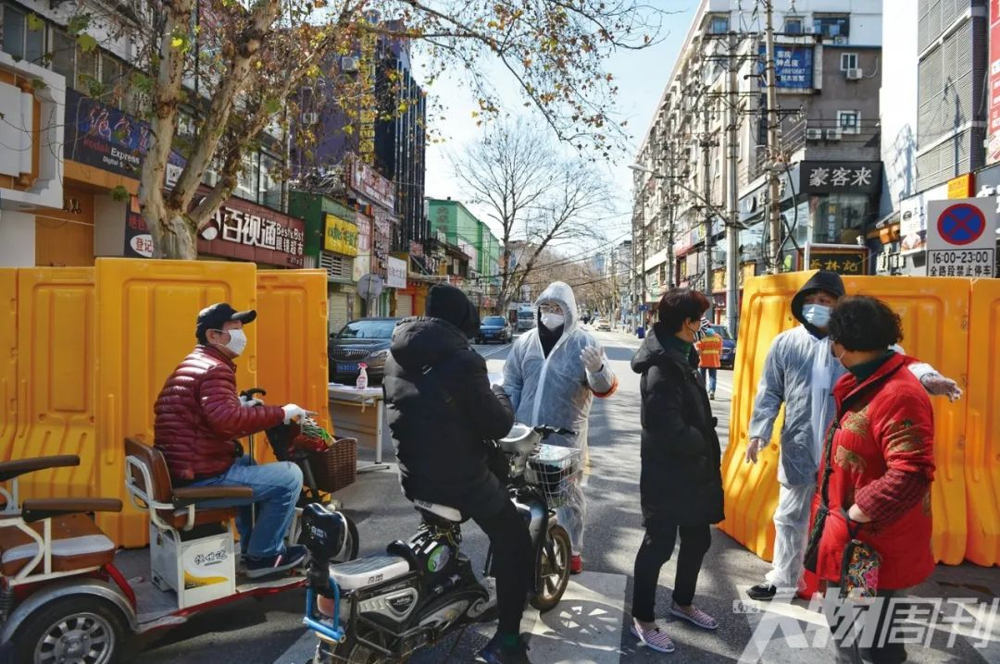
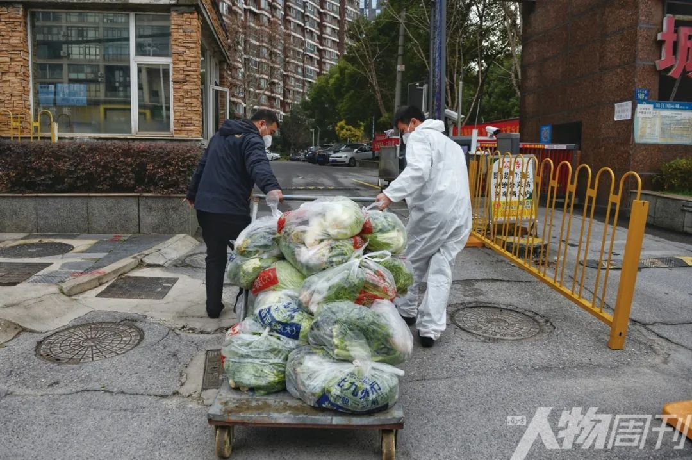

武汉人买菜的真实图景
原文链接 备份链接 他们理解小区被封，理解只能选择被塞了四大包汤圆的团购套餐，理解菜价成倍上涨，理解要继续忍受生活上的不便，才有可能早一点等来结束的一天。 文 | 谢婵 编辑 | 小豆 武汉伢王嘉兴给父母打电话，得知小区业主群里推荐 …
家住温馨苑的黄新陷入了愁苦之中。她丈夫疑似新冠肺炎，高烧十天，无法进食。因为生病，丈夫有点消极，唉声叹气，虽然还没有检测确诊，但他觉得自己基本就是新冠肺炎了。黄新不敢跟外人说，同事们聊起天来，她也不敢出声。“你家有这个病，人家就会有想法，挺恐怖的。我觉得也没必要说，说的话，别人也帮不到你，是不是？有些苦得自己忍受自己扛”
本文首发于南方人物周刊2020年第4期
文 | 本刊记者 卫毅 陈洋 孟依依 孙凌宇
实习记者 聂阳欣
编辑 | 雨僧 周建平 rwzkjpz@163.com
全文约12952，细读大约需要28分钟

2月17日，武汉小区封闭拉网排查，志愿者对进出街道的人群进行管控 图/王效
万家宴

2020年1月18日，小年夜那天，早上刚过8点，百步亭安居苑79岁居民高慧（化名）出门了，她要赶赴一场宴席。上万道菜品将在社区中心里展示。她穿了一件17年前的红色休闲衫。17年前，她和对门的邻居大姐共制一道菜，取名“邻里情”。有时她会想起那位已经搬走的大姐。她有点念旧。
万家宴的食材来自周边超市或菜摊，多半是老人采购烹制。上网买菜对他们是新鲜事，他们中很少人会用微信。 吕佳俊此前在实体超市工作，看到生鲜电商的潜力，2019年7月跳槽到一家生鲜电商平台，担任汉口区域经理，负责8个站点，包括百步亭附近区域。快过年了，他安排了过年值班表，打算年二十九回老家江苏无锡过年。
家乡为四川乐山的游洱（化名）1月初匆匆回了一趟老家，和亲人待了一个星期，算是提前过年。游洱在百步亭附近开了一家社区家常菜餐馆。以往过年，餐馆都不打烊。2020年的预定同样火爆，店里从年三十到初十，一楼九桌，二楼十桌，再加五个包间，一共二十多桌，几乎订满。近一半员工没回老家，准备餐厨，来迎接这丰盛之年。
黄新（化名）住在百步亭温馨苑。她公公以往会给万家宴贡献一个菜，今年则没有。此刻，万家宴的场地，人多了起来，玩龙灯的里三层外三层。黄新站在最高点，看人头攒动。宴席的对面，隔着马路，是唱歌的台子，人声喧闹。那排着的桌子前，还有串珠子的、编蚂蚱的、写对联的。
前两天，黄新的儿子要到外地参加比赛，丈夫把儿子从百步亭送到汉口火车站，途经华南海鲜市场。丈夫没戴口罩。
在差不多的时间，武汉大学社会学院老师梅红去汉口站接从北京回来过年的小孩。武汉冬天多雾霾，她比较在意，口罩是过冬必备。加上元旦前后已有疫情消息，她更是注意。但此时的武汉出租车上，司机还没戴口罩。师傅看她戴口罩，反而奇怪。她提醒师傅。师傅笑了：人命在天啊。在汉口火车站广场，梅红问岗亭警察，如何到达地下出口，回答她的警察，也没戴口罩。
万家宴前后，百步亭派出所的警察孙祥（化名）如同平时那样执勤。“我来这里好些年，不知道在多少家聊过天，吃过饭。”他对万家宴的历史了如指掌。“最开始居民少，叫百家宴，后来叫千家宴，现在是万家宴了。”
罗秋（化名）的父母住在百步亭悦秀苑，她没住那里。她从住处到百步亭，开车要20分钟。父母家住的是经济适用房。2016年出嫁前，她在百步亭住了十多年。百步亭社区一直作为全国样版社区见诸报端。
早年这里是遍地烂泥的荒僻之地。对许多武汉人来说，这是一个“遥远而陌生”的地方。百步亭社区位于武汉城市总体规划中最大的后湖居住新区南端，占地4平方公里。二十年间，陆续入住十多万人。这里是全国文明社区示范点、全国和谐社区建设示范社区，曾被评为全国文化先进社区，是荣获首届“中国人居环境范例奖”的惟一社区。
罗秋对这些没什么感觉。“还算可以吧，小老百姓过日子。”悦秀苑门口的万家宴分会场，她只去过一次。
成东（化名）是百步亭的租户，住在文卉苑。她的工作是室内设计。搬来百步亭社区已经五六年。她和父母住在一起，没去过万家宴。“父母不喜欢凑热闹，我们小区里面每年都有，一家一个菜，社区会派人到每家送一个盘子。”在成东的印象中，有一年，她妈妈做了一条松鼠鳜鱼，送到万家宴。今年不知什么原因，社区没有送来盘子。
容敏（化名）之前住在武昌，4个月前她生了孩子，搬到百步亭文卉苑。这是百步亭的老社区，房子是她公公婆婆8年前买的，他们也住在附近，方便带孙子。哺乳期的容敏对疫情新闻一直很关注。2019年12月30日，微信群里，一个护士叮嘱，要戴口罩，勤洗手。
“百步亭的居民以老年人居多，平时见到的都是40岁以上的。”容敏说。万家宴的参加者以老年人居多，年轻人普遍不太在意。
万家宴不乏热心之人，高慧是其中一位。她早上去场地帮忙，中午买菜回家，下午又去，再回家已是下午5点。“很开心的一件事情。”高慧说，“我喜欢交朋友，喜欢管闲事，我还喜欢帮助别人。”
2000年，作为第一批入住百步亭的居民，高慧和老伴搬入安居苑。那年年底，百步亭举办第一届百家宴，菜品只有五十多道。“一人发个碗和筷子，可以品尝。”因为觉得新小区绿化好，高慧做了一道菜，叫作“满园春色”。她善于创新菜品。往后的每一年，她都参加百家宴。3年后，百家宴扩大为千家宴。那年她做的就是“邻里情”。2009年，千家宴又扩大为万家宴，菜品达到8146道，创下“展出最多菜品宴会”的吉尼斯纪录。“实际上，那年有13000道菜品，只是很多菜超过了中午12点的送达截止时间，没计算在内。”高慧对万家宴记忆深刻。
梅红在武汉大学社会学院做社区工作的研究，去百步亭做过调研。这里每年都有民政部门牵头举办社区工作培训班，每年都办好多期。“百步亭是房地产集团打造出来的社区典范，同时是在党组织为中心的模式下建立的新型社区。是单位制向社区制转变过程中典型的案例，却不是可轻易复制的。”梅红说，“万家宴是百步亭的社区文化传统，当时就有意通过社区文化来打造与众不同之处。”
7年前，高慧的老伴去世，她成为空巢老人。去参加万家宴对于高慧而言，是一年中的大事。早在11月，她就开始准备，设计了许多方案，每次做好，便拍下照片，传给身边熟人，征求意见，修改数次，最终成型。
1月18日的万家宴开始了，高慧拿出她的菜品——最上层是用心形模具做出来的豆腐，周围是五个心形盒子，里面盛满了石榴，盒子上写着五个小字：我想棒哒哒。左侧是一罐糖果，右侧是两位老人。高慧把这道菜称作“幸福食堂”。
“幸福食堂”指的是社区去年开办的老年食堂。“我一个人生活，自己在家做也不是说不会做，做多了总是剩下，做少了营养又不行。社区有这样的食堂，我觉得很好。有时候一荤一素一汤，有时候一荤两素一汤，合老人胃口。”高慧说。
万家宴上，“幸福食堂”被评为“最佳创意奖”。

1月18日，武汉百步亭社区举办“万家宴”活动
图/新华社记者 肖艺九
封城之后
1月21日，武汉开往荆门的火车上，梅红花了点钱，和家人坐到餐车里。这里更宽敞，有利于防止病毒侵袭。她和家人正前往荆门老家过年。餐车里除了两位江浙游客，大家都戴了口罩。头一天晚上，钟南山在新闻里说，病毒已出现人传人现象。餐车上，乘务员反而没戴口罩，说，戴了会造成恐慌。梅红看到百步亭万家宴照常举行的新闻，就像过去二十年她所看到的那样。
住在百步亭温馨苑的黄新不太关心周围住了什么人。“我们每家每户都在家里面，谁知道哪家住的是什么人，每家也不跟每家联系，出门就出去了，进来了就把门关上。”
黄新一家原本住在头道街，老房子拆迁后，她家拿到了拆迁款。如果在市中心买房子，会小一点。家里有老人有小孩，太挤。她搬到百步亭，住进一百多平米的房子。
1月23日，百步亭文卉苑楼下的广播喇叭持续播放通知：公交10点停运。直到这时，成东才知道：武汉封城了。她比较后知后觉。许多武汉人凌晨两点得到消息后，度过了不眠之夜。
住在文卉苑的容敏会看新闻，防范意识比较强，之前备了些肉和菜，但品种有限。一整个星期，她家每餐吃大白菜煮猪肉丸子。要么将土豆、胡萝卜和肉炖在一起。4天前，家里东西吃完了，也没敢去超市。她每晚10点在网上抢菜，“10秒就抢光了。”
罗秋每周给住在百步亭的父母送一次菜。如今，小区群里，大家聊得最多的是——菜。从年轻人到中年人到老年人，空前一致地关心起了——菜。出于对疫情的担心，大家都不想出门。“但是，吃怎么解决呢？”罗秋说。
许多人需要菜。社区帮忙配送，肯定不够。这是罗秋的担心。在网上买菜，只能送到小区门口，而且需要组织者。她担心父母出门取菜。“我妈身体不好。我怕我爸把病毒带回去。他们的防护做得肯定没有我们好。”罗秋给父母买菜，都是放门口。她爸爸拿回去，全部消毒。
得知即将封城的消息后，吕佳俊取消了回无锡过年的计划。他的一些同事立即开车离开武汉。剩下的一些同事刚入职两三个月，他不太放心，所以选择留下来。
年前，百合苑的何悠（化名）完成物资食品囤积后在家里待着，怕被病毒感染。隔离了半个月，虽然酒精、口罩、护目镜和食物都还有，但她还是担心。今年武汉的冬天气候异常，阴雨绵绵，比往年都要暖，这几天又下雨了。空气湿度高，病毒在这种空气中生存的时间更久。让她害怕的是，“几乎没有闻到过消毒水的气味。”那股味道不好闻，此时却能让人安心。
有一段视频在网上广为流传——百步亭安居苑住户拍下了对面楼层消毒人员匆匆消毒，拍了照片便走，大概只有一分钟。住在文卉苑的容敏看到了这个视频。“我们也不太确定消毒工作到底有没有完成，只在每栋楼的微信群里看网格员发上来的消毒照片，照片的背景里有时还有没戴口罩的大爷在楼下聊天。”
老张是百合苑的物业人员，他也看了安居苑那个视频。“那应该是刚来的员工，有时候打（消毒液）多了搞忘了，你像我们打（消毒液）的话，一个人打89个单元，有时搞忘了，漏了个把单元的情况也有。每天下午，我们从1点打消毒液打到四五点才结束。”
老张介绍，整个百步亭社区是由同一家物业公司管理，共有员工近两千人。他所在的百合苑有十几个保安、七八个保洁和五六个管理人员。
百合苑是2003年9月28日交的房，那年老张下岗，看到招聘告示，便来应聘，一直工作到现在。最开始负责绿化，后来绿化承包给别的公司，他就转岗做维修员。十年前，他升级为房管员，负责水电等公共设施的维修管理，晚上小区里路灯坏了，或者哪家水管爆了，他都要去弄，要是水漏到住户楼下，他还得去协调邻里纠纷。
疫情期间，物业主要负责小区公共区域的消毒，包括楼道、楼下垃圾桶和中心广场等地方，一共九个人，每天消毒两次，上午8点多和下午1点多各一次。其中负责消毒楼道的有四个人，小区共有35栋楼，每栋楼又分为独立的三四个单元，共有118个单元，每个单元六层楼，由于是老小区，都没有电梯。
2月11日开始，老张和同事们接手了保洁的消毒工作。“发热楼栋1至6楼的楼道全消毒，没有发热的楼道消毒1至3楼。”老张感到辛苦，“我们人员有限，都是五十多岁的人，一桶水32斤，没电梯，给两栋楼消完毒，身体就吃不消了，但也只能坚持。消毒液是公司送过来的，按照国家规定的消毒液与水1比50的比例调好，稀释后几乎没有气味，所以居民们闻不到味道，但并不代表我们没有喷洒。一开始他们还是不相信，要我们消毒时拍照片发群里，我们也没有时间每个单元都拍，只能一栋拍几张。我在群里说，你们要相信我，我也算是出来当志愿者了，公司本来腊月二十九就放假了，一直放到3月份，我大可以在家休息，但现在国难当头，男人理当出来顶天立地。我从2月5号就自愿回来上班，一直到现在，11号开始做消毒工作，天天喷，累的时候从没想过不做了，只会想这个疫情到底要到几时才结束呢。”
2月20日以后，新问题又出现了，有的业主跟物业说，消毒水打多了也不好，会渗到地表层，对水质造成污染。还有的人把垃圾放在门口，让老张和同事帮他拿下去。“我们只能劝他，只要戴好口罩，下楼扔垃圾是不用怕的，但还是有人不听，直接从楼上往下扔，扔完之后，我们还是得打扫。”
老张感到力不从心，物业要管的事情太多了：打扫卫生，管控进出小区，帮社区送菜给孤寡老人。“小区一共1341户住户，很多问题我们都没时间一一回应，因为事情太多，人手又少，根本忙不完。现在又招不到人，谁来呢，大家一听百步亭都怕了。”小区21个发热单元，但有的老人单纯是发烧，不见得是感染了新冠肺炎，或者有别的症状需要急救。“居民一看到救护车进来就很惊慌，一传十，十传百，物业的电话都要打破。”
百步亭每个小区物业费不一样。百合苑物业费偏低，0.95元一个平方。“别的小区不太清楚，但跟我家住的长江新城1.2元一平方比，这里算低的。2003年交房时是0.55元，2008年7月1号升到0.7元，2016年元月1号调整到0.95元，直到现在。”这些日期和数字，老张脱口而出，记得特别清楚。
老张的同事都是入职时间比较长的老员工。招不到年轻人的另一个原因是工资太低了，到手两千多块一个月，公司只缴社保医保。十几年来，工资每年涨一两百，有时候只是社保涨几十块。“但我也没想过换工作，因为可以跟各种人打交道，什么人都有，看得挺多，这个还是挺有意思的。”老张说。
孙祥在百步亭做了很多年警察。他觉得在这里呆上几年，可以写一本书了。他也提到万家宴。百步亭因为万家宴而出名多年，也因为万家宴而在疫情之初备受指责。部分百步亭居民感到委屈。有一篇文章被广泛传播，为的是让大家更了解百步亭。“你可以看看这篇。”孙祥在休息间隙发给本刊记者一篇文章。文章出自一位前新闻工作者之手。他说万家宴现场不到万人，受限于场地，摆桌之后，只能留一些人拍照记录，别说千人，几百人都不可能。菜品都有覆膜，并不是现场食用。老百姓不知疫情严重，不能怪他们。
成东不是每天都下楼。她发了一张地图给本刊记者，“百步亭太大了，有很多苑区，刚刚发给你的那个图片上的苑区在一条大马路的对面，这几个苑区只占了百步亭花园的五分之一，其余苑区都在百步亭花园里面。红色区域是最老的百步亭花园。我们在后湖大道大马路对面，都是新建的小区。红色的苑区感染的人多些。”成东说。
青木（化名）住在百步亭百步龙庭。“疫情发生到现在，没有人上门核查我的体温，前段时间有打过电话问，但是没有天天打。”青木对小区物业不满意。她记得上小学初中的时候，电梯经常坏。“去年夏天，电梯没装通风装置，连个电扇都没有，武汉的夏天又很闷，我妈跟一位老爷爷一起坐电梯，老爷爷就觉得很不舒服，喘不过来气，我妈立马投诉了，后来物业才来给电梯安上风扇。”
在青木住的小区，三个大门关了两个，现在只有一个门让人进出。家里人没事干的时候就待在阳台往下看，有时候，“一上午都见不到楼下走过一个人。”
“我们可以不只是呆坐等待，应该做点可以做的事情。”研究社区工作的梅红说，“这次疫情太严重，我们平时感受不到的业主委员会，这次发挥了很大的作用，他们建群，发信息，通过微信采购物资等等。有的人做志愿者，和社区中心一起工作。非常时期的非常举动，让人觉得人与人之间挺有感情的。有没有做我们普通居民可以做的事情？居民很自觉地把各种任务放到了几个人身上。我们好像是观看者和评判者，看着物业、业主委员会和社区中心怎么做。”梅红想到了1998年武汉抗洪。“这次的灾难又不一样。这个灾难是比较特别的，比较忌讳人和人之间的紧密互动。到底我们还能做什么？我也在思考。”

2月18日，武汉青山区工人村街道青和居社区居民接受排查
图/程敏
百步亭的病人
百步亭是一个超级城市综合体，小区林立，有商品房、经济适用房和廉租房。李莉（化名）是百步亭廉租房的租户，此时，她住在作为隔离点的经济型酒店。“真是太难了。”李莉说，“我们是2月11号来的隔离酒店。2月12号我朋友就开始高烧不退。”
李莉的朋友并不确切知道自己的症状从何而起。李莉的妈妈去过今年的万家宴，她反而是家里三个人中唯一没有症状的人。二十多平米的空间里，三个人一起生活——李莉的朋友、妈妈和她。
朋友出现症状后，他们去社区医院看了病。医生要求他们去汉口医院拍片子，验血。作为疑似病例，他们接着被要求住进隔离点的酒店。在隔离酒店，李莉的朋友高烧不退，他被要求送往医院。这是一个逐步递进的隔离级别。
李莉曾在百步亭业主群里求助。2月13日上午发出求助信息，下午，朋友被送到医院。李莉也感染了，但与朋友不同，她没有像朋友那样发高烧，说话有些气喘，呼吸感到憋闷，晚上睡觉时冷汗不断。
在隔离点，李莉拿到了发放的中药。朋友在社区医院时，有医生给他开了一些药。朋友被送走后，李莉吃他留下的药。在酒店里，她去找了一瓶84消毒水，给房间消毒。她担心交叉感染。她的口罩是自己的，进来后戴到现在。她最希望的事情是自己的情况变得更严重时，能被及时送往医院。
交通工具是亟待解决的问题。许多应急车辆优先照顾透析病人、癌症病人和其他重症病人。疑似病人有时不得不等，因为“太多了”。一位社区工作者表示了无奈。
百步亭社区的洪维（化名）1月30日开始发烧，一开始以为是感冒，自己在家吃头孢、康泰克、莲花清瘟胶囊和退烧药，一直未见好转，持续高烧，浑身无力，神志不清，呼吸困难。2月3日他去了社区普仁医院，医生给他抽血化验，做了CT，显示肺部明显感染。医生得出的结论是高度疑似新冠肺炎，让他立即去三甲医院就医。想进三甲医院谈何容易？家人联系了几家医院，均被告知没有开住院证收发热病人的权力，必须由社区登记排队入院。联系120之后，得知前面有四百多人在排队。
洪维的姐姐洪君（化名）四处求助。最后是亲戚千方百计帮他们在同济中法院区找了一个床位。洪维于1月9日送医，病情现有好转。
洪维所住的同济医院中法分院，目前是北京派来的医疗团队进驻治疗。他们姐弟每天用微信问候，“弟弟说话没力气，有时回一个字，有时不回复。”
“现在小区己封，之前准备了一些必需品，今天差点食材，打电话让居委会送来的。”洪君说。她不能去医院探望弟弟。在离医院几里的地方，己执行交通管制，车辆禁行。弟弟入院匆忙，带了些日用品和随身衣服，水果、牛奶没带，又不能送，“我们只能在家等。”

百步亭社区，居民在小区门口聊天 图/本刊记者 杨楠
家住温馨苑的黄新陷入了愁苦之中。她丈夫疑似新冠肺炎，高烧十天，气短，无法进食，呕吐，浑身无力。因为生病，丈夫有点消极，唉声叹气，虽然还没有检测确诊，但他觉得自己基本就是新冠肺炎了。黄新不敢跟外人说，同事们聊起天来，她也不敢出声。“你家有这个病，人家就会有想法，挺恐怖的。我觉得也没必要说，说的话，别人也帮不到你，是不是？有些苦得自己忍受自己扛。”
没住院那几天，黄新看到丈夫吃不下饭的样子，难过得要掉下眼泪，又不敢在他面前哭，只好等到晚上，自己蒙在被子里哭。“我都急死了，你知道吧？人都快没命了。”
丈夫生病后，她搬到客厅，起先睡在沙发上，脚伸不直，搬了凳子，被子总是掉，最后拿出两块板子拼在一起当床，被子也不够厚，就把衣服盖在上面。她找不到人倾吐心中烦忧，有时候跟妈妈讲，妈妈只能跟她说“不怕不怕”。
丈夫刚发烧那会儿，需要到医院打针，没联系上车辆，他们最后是打摩的去的医院。一趟五六十块，每天来回要花百来块钱。黄新记得，丈夫发热的第五天，下大雨，他们要去医院打针，“摩的不去，说啥都不去，没办法，我们又回来。好不容易联系社区安排了车，但是，从医院回来又有了困难。”那天，他们两个人只好步行到相对较近的黄新母亲家借住。“饿了一整天，又冒着雨，走了两个半小时才到家。”
几天后丈夫最终住进了医院。她记得那辆送他丈夫入院的汽车——一辆专门接送发热患者的车，“看起来像个箱子，没有窗户，只有一小块透明玻璃，透过玻璃，能看到司机的背影。”
2月17日下午，黄新接到社区打来的一个电话，被告知，她作为新冠肺炎疑似患者密切接触者，要到酒店去隔离。她坐在沙发上想了很久，还是决定过去，虽然家里只剩下快八十岁的公公和十七八岁的儿子。
武汉下大雪那天，黄新在家里发呆，武汉冬天并不经常下这样的大雪，“今年就是个灾年，夏天的时候，连树都热死了。”
改装后的警车停靠在百步亭社区门口。准确地说，是百步亭某个社区门口，百步亭太大了，在中国的行政区划里更接近于街道。一场大雪不期而至，委实罕见。雪花斜着掠过，密集地砸在车身上。警车车厢后门和驾驶室的门都开着，这是送完病人之后，正在消毒和通风。车厢后半部有一个折叠座，翻下来可以并排坐几个人。后半部和前面的驾驶室被隔开，原本透明的车窗被一张告示贴了起来，下面横挡了一块木板。穿着白色防护服和护目镜的孙祥与同事坐在驾驶室里，等着新一趟的任务。他们今天已经在社区与隔离点、方舱、医院之间跑了几趟。警车更像是救护车。整个武汉仿佛一个巨大的医院。许多人等待着这样一辆开着门的车。
武汉“清零”行动开始后，各等级的病人都需要妥善安置，社区需要各方联动。
小志（化名）是百步亭社区工作人员。“百步亭社区最艰难的时候，可能是整个武汉疫情刚开始暴发那会儿。”小志说，“因为本来社区人手就不是很多，群体太庞大，跟踪摸排量很大，社区工作人员也不是医护人员，有些这方面的设备，专业知识（不足），所以对他们来说，疫情突然发生以后，他们就被推到前线，可以说除了医务人员，他们就是随机医生了，不管是经验、心理还是物资，都不是很应对得来。现在，社区相对来说更有条有序一些，目前能够提供的床位比以前多了，方舱医院也一直陆续在建，应收尽收的病人也差不多收进去了。”
“我们这边不是每天还要给社区居民打电话吗，了解居民的情况。客观地说，我们并不能保证12万居民每天都接到一个电话。”小志说，“社区有人跟居民打电话，他自己是很健康的，家里也没人感染，每天给他打个电话，问今天发不发热，你问多了，人家会烦你，然后直接说，你不要再跟我打电话了。有的居民不愿意你上门，每天自查体温。”
2月15日，雪下了一夜，孙祥又忙了一天。
百步亭整个社区的疑似病例都归警察送。“检测结果出来后，再分类处理。今天只有一个是密切接触的居民，其他都是发热疑似的。”社区给警察打电话，他们派人派车。“转运必须是医生和警察执行。”
警察出行像医生，穿着防护服，戴口罩和护目镜。没有方舱之前，也就是“清零”行动之前，他们的主要任务不是运送病人而是巡逻，严防有人恶意传播。现在对一个社区来说，考验很多，大家以前没有经受过这么极端的考验。“和平时间太长，都在娱乐至死啊。”孙祥的金句很多。
他们会有预防感染的培训。“我们现在万一感染了，比普通人更可怕，因为我们要衔接各类人群不是？”孙祥说，“我现在都是住在单位寝室，寝室一间四人，战备的时候就不能回家，和军队是一样的。非典时候我们就是战备状态，全国大型活动也是战备状态，不计其数了。”
孙祥感到了今年春节的截然不同。日常犯罪少了。“打架斗殴的，偷盗的，基本没有了。”因为大家都在家里。
小区的清洁工、社工都在位在岗。“社会管理和公共服务都是正常运作的。”
他接着补充，在基层工作，居委会和警察压力都大。“做事的都是基层的，肯定压力大。”
2月16日，湖北省委常委、武汉市委书记王忠林召开视频会议，部署拉网式大排查，要求在中央指导组的推动下落实五个“百分之百”工作目标，坚决遏制疫情扩散蔓延。五个“百分之百”举措即“确诊患者百分之百应收尽收、疑似患者百分之百核酸检测、发热病人百分之百进行检测、密切接触者百分之百隔离、小区村庄百分之百实行24小时封闭管理”。
本刊记者将这条新闻发给孙祥，说，接下来有你们忙的了。隔了很久，他回复：革命尚未成功，同志仍需努力。

2月11日，武汉一小区物业工作人员为业主集中配送蔬菜 图/王效
买菜作为大难题
吕佳俊所在的生鲜电商平台在百步亭的站点主要服务周边三个小区，分别是百步华庭、万锦江城和万锦公馆。2月17日，小区开始实行全封闭，居民不能再来站点自提，订购之后，由他们排序、打包，用小板车运到小区门口，最远可以送200米，再由社区工作人员和志愿者提进去，每20个号码一拨，在群里喊居民下楼提菜。
吕佳俊一直在忙。2月初头一周，订单爆发，每天营业额升到一两万。这些站点只有一两个人，连续三天，他和同事一直忙到下午6点下班，没时间喝水吃饭，有时还被顾客抱怨效率低，大家压力都很大，他得关注到员工的心理波动。“有的员工比较情绪化，看到某天确诊案例增加了几千人，就说，第二天要是再涨我就不干了，这个时候就得安慰他们。”他跟员工说，疫情我们控制不了，但你们作为武汉人，这个时候唯一能做的就是尽一份绵薄之力，你在武汉的亲朋好友们，也都要吃饭，如果我们都不干，他们怎么办呢。员工的防护服、口罩等，他们会配齐。她给每个人申请了每天50块的餐补，疫情期间双倍工资，加班费调到1.5倍。
好不容易留下一些员工，但人手还是不够，又招了几位兼职员工，优先选择年轻人，可以干体力活，抵抗力也比较强，兼职时薪从25块调整到35块，每天工作六七个小时。
刚开始，吕佳俊自己也有点害怕，后来忙起来，“就根本没时间害怕了。”
2月17日，容敏所在的文卉苑彻底封闭。从那天开始，微信里出现了买菜的公益团购群。每天中午12点到下午两点，大家在群里下单，第二天下午3点去小区内的物业办事处拿。菜都是配好的，一袋蔬菜50块，里面会有莲藕、包菜等四五种蔬菜，生姜大蒜是买不到的，但有菜，“我们已经感谢天感谢地了。”一周有一次肉，也是搭配好的，价格还挺便宜，一袋200块不到，有大概两斤鸡胸肉，两斤鸭，两斤猪里脊，2.6斤排骨，不限数量。
容敏加了十几个买东西的群，分别买药、水果、卤菜、牛奶、酒精、母婴产品等，见到群她就加，能买尽量买。“一天一个变化，你没法预测明天会怎样，只能做好准备。”
不让出小区，大家只能托志愿者、外卖小哥、商家配送员跑腿。小区一共四千多户，每天都聚集了很多居民在交货的门口，等着外面的人递菜递米面进来。门彻底封死了，由志愿者或者下沉到社区的干部守着，硬要出去会被警察带走。容敏住在2楼，经常听到楼下有老爷爷吵，“不让我出去啊。”
社区工作人员小志介绍，百步亭9个居委会，常住人口12万。文卉苑情况还要特殊些，是武汉市最大廉租房所在地。“这个时候，住廉租房的人可能会更困难一点。”
社区从未如此受人关注。梅红觉得，这次疫情让大家“发现了社区”。
“大家经常说下沉到社区。从现在的情况看，社区不能忽视。这一次，我们看到了社区本身的作用，各种各样的困难，都在社区里克服。”梅红说，“作为居民来说，我们一般是害怕，在家里面抱怨，或者说在家里面发愁。我们看到社区的人员非常紧张地在工作。社区中心、业主委员会和物业，这是中国城市最主要的三大组织。他们这次很积极地服务大家，但我们也看到了这其中缺乏平时的组织建设。组织关系的建设，不同社区不同程度地显现问题。突发状况下，看起来大家在相互配合，这个在平时是看不到的。平时甚至是矛盾的状态和冲突的状态出现。冲突的状态，可能是因为这三方是不一样的利益群体。三方并没有做好相互的制度建设。我该做什么，他该做什么，我们可以共同做什么？”
做志愿者，可能是迈出的一步。林光是文卉苑的志愿者。他从2月11日开始在文卉苑做志愿工作。“当时的契机，说老实话，是为了顶替我爱人。”林光的妻子是党员，要下沉到社区做志愿者。知道她被安排去百步亭后，10岁的儿子抓着妈妈的手说，“那个地方我都听说了，很严重，妈妈能不能不去。”林光便说，“要不我去吧，一来她可以在家管小孩，而且我一个男的肯定顶事些。”
林光以前从来没做过采购和配送的工作，一切从头开始。到岗当天下午，林光就从政府给他们提供的一些蔬菜公司当中筛选，咨询他们的实力、能提供的分量、有没有自己的基地、运输能力如何，最后找的这家在黄陂区（郊区），离百步亭一两个小时路程，有基地，有养鸡场，供应起来应该是有保障的。
接着琢磨怎么购买、取菜，林光和志愿者们在小区内建微信群，通过一个小程序下单、付款，供应商的菜都是按套餐卖的，有50一袋和200一袋的分别。社区书记说这个小区是由三个社区拆迁过来的，住的大多是低保户或残疾人，建议只卖50块的。一袋有13斤蔬菜，大白菜、胡萝卜、土豆、莴苣、青椒，加上使用小程序的3毛手续费。“我们担心可能居民们不愿意多交手续费，从晚上到第二天中午都在找别的方法，但相比之下还是这个最方便，后来还是有居民在群里说，凭什么要收3毛。”
这个过程当中，林光发现小区里的老人起码占了三分之一，一些群都是五六十岁的居民为主，基本上要靠志愿者教他们使用。往往在群里刚教会一个，下一个马上又问同样的问题。他们人手不够，又从小区居民当中招了6个志愿者。林光十分佩服的是，新加入的志愿者都很有耐心，一遍遍地教老人家使用微信支付和小程序，实在不会用的就加对方微信，让对方转钱过来，告知住址，帮他们下单。
青菜买到第三天，有居民开始在群里问，有没有周黑鸭、鸡蛋、肉和鱼啊。有居民说，一个星期没肉了，小孩子吵得慌。2月15日，林光联系到白沙洲的一家食品公司，可以提供肉套餐，188元一套，有瘦肉、排骨、鸡胸肉、半只鸭，他们在武昌区，与此地隔一条长江，虽然有货源，但运输很麻烦，得48个小时才能到。
在群里发起订肉时，居民们欢天喜地，一开始限量100份，不到半小时就买光，提高到200份，最后下单180份。林光当天晚上跟食品公司的经理说，不行，必须第二天送到。经理被逼得没办法，第二天晚上五六点送来，林光和志愿者派发到晚上9点。
从2月初到现在，吕佳俊负责的百步亭站点每天大概会收到五百笔订单。90%的订单都是蔬菜和肉，10%是米面油、纸巾、零食等生活用品。日营业额达到两万多，是平日的四倍。每天上线后，蔬菜大概3到5分钟抢光，上万份肉一两分钟就没了。百步亭由于疫情比较严重，可能需求更高。他们这个小站点不过四五十平米，日均业绩却是全武汉最高的。“由于人手不足，我们只好提高效率，按套餐供应，每个蔬菜套餐里有五六种蔬菜。个别居民不理解，抱怨我们提供的蔬菜品种不够丰富，但只有把商品种类减少，打包效率才能更高，供应能力才能随之提升。”

百步亭社区，工作人员为超市配送蔬菜食品
图/本刊记者 杨楠
等待拐点
从乐山回到武汉的游洱和他的留守员工们，没能将那拨预定的年夜饭付诸实现。如今，餐馆二十多号员工都被安排在附近小区宿舍，严格隔离。厨房里有足够的备货，三名师傅做好饭菜给他们送过去。
游洱的餐馆是2017年10月开业的，主打社区餐厅，一直注重邻里关系，逢年过节，比如端午节，会送些粽子给街坊，和许多住在附近的顾客建立了友谊。疫情期间他们没法正常营业，但常给小区的留守老人送菜。
疫情给餐馆带来的损失是不言而喻的。寇天（化名）的农家小院在百步亭附近开了11年，店里60位员工，年前备了10万多的货，损失了近二十万的年夜饭收入。
罗秋是做服装这一行的，她对工作停滞感到担忧。“现在有几个企业在员工不上班的情况下能做到发基本工资的？”她就职的是线下服装门店。“老板自己都撑不下去了，你能要求他什么？去告他么？不可能的。他能活下去就不错。”每次买东西，罗秋都要花掉上千块，疫情时期的花费更多了，况且，“还有房贷呢。”
成东还有三十几个口罩，疫情发生前买的，准备冬天用。她说，11日去领出入证的时候，居委会给每家发了三个口罩。单独包装的，不管一家多少人，一家只有三个口罩。一家四口人，也只发三个口罩。
现在，妈妈每次出门拿一次菜，成东就会担心一次。她会用84消毒液拖地，用酒精擦桌子。除了慌张，就是无聊，“想上班。”她说。
高慧在电话里很健谈。女儿成家后，就不在她身边了，外孙女小时候和他们生活过一段时间，上中学之后回爸爸妈妈那边了，“冷清了很多，搬走了我们也休息一下，但是休息不长，老伴走了。”
高慧有时候身体不好，“是触景生情，我想我老伴了，尤其是家里只有一个人的时候。”但她没有搬去女儿家，“我不愿意离开百步亭，我不愿意到他们那去。他们也很忙的，孩子要读高中没有办法，他们自己家都不住，在学区旁边租的房子，我不能去打扰他们。我身体还好，能吃能走，能说能笑的。”女儿家离她住的地方要一个小时车程，大多数时候都是打电话，问一声“妈妈还好吧”。
以前，一个人在家的时候，高慧早上会去老年活动室——他们喜欢把那个地方称作“托老班”——看电视、聊天，或者看人家打一会儿麻将，中午吃了饭回家休息。
现在“托老班”暂停了，“幸福食堂”不营业了，她需要自己一个人面对更多时日的独处。她会回忆起万家宴的时刻，她需要这样的时刻，能够让独自一人的生活有所支撑。
1月18日的万家宴结束后，高慧带着获得“最佳创意奖”的“幸福食堂”回到家里。这道菜在家里像盆景一样摆了几天，直到其中的食材慢慢坏掉，然后，塌了。接下来，百步亭、武汉、湖北，以及全国更多的地方，突然进入始料未及的生活。
战“疫”专题：


点击“阅读原文”即可订阅和购买最新杂志
原文链接 备份链接 他们理解小区被封，理解只能选择被塞了四大包汤圆的团购套餐，理解菜价成倍上涨，理解要继续忍受生活上的不便，才有可能早一点等来结束的一天。 文 | 谢婵 编辑 | 小豆 武汉伢王嘉兴给父母打电话，得知小区业主群里推荐 …
原文链接 备份链接 【财新网】（记者 覃建行）新型冠状病毒肺炎确诊病例激增后，武汉百步亭社区曾于此间举办“万家宴”的活动引发了争议。1月22日，财新记者走访当地，多位居民称此前政府对疫情评估不够，导致在传染性疫情趋重的情况下还举办如此大 …
原文链接 备份链接 若干年后回望，这一定是一段值得铭记的日子。因为新冠肺炎疫情，许多家庭无法团圆。疫情数据地图的每次刷新都令人揪心。我们和千万武汉人在一起，这不只是一句安慰，因为没有人能够置身事外。 之前，我们向用户征集这段时间的故事， …
原文链接 备份链接 凤凰新闻客户端 凤凰网在人间工作室出品 口述：思雨（医院工作人员） 坐标：武汉市硚口区 我是95后，父亲是医生，当初我也想要学医，被父亲否定。他觉得当医生太辛苦了，不适合女生。但我最终还是在2019年7月，成为了武汉一 …
原文链接 备份链接 经历整整31天的艰难考验之后，武汉疫情防控已经从无序走向有序，但千万居民的生活从无序到有序才刚刚开始，这个疫情核心区的社会经济生活全面恢复，还面临很多挑战 2020年2月11日，武汉市洪山体育馆武昌方舱医院，社区工作人 …